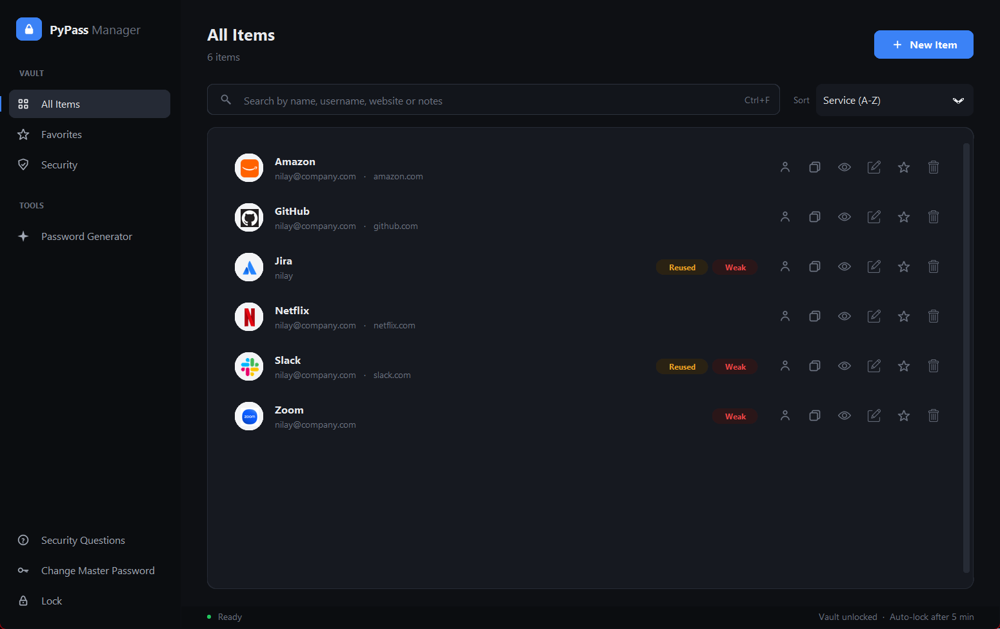
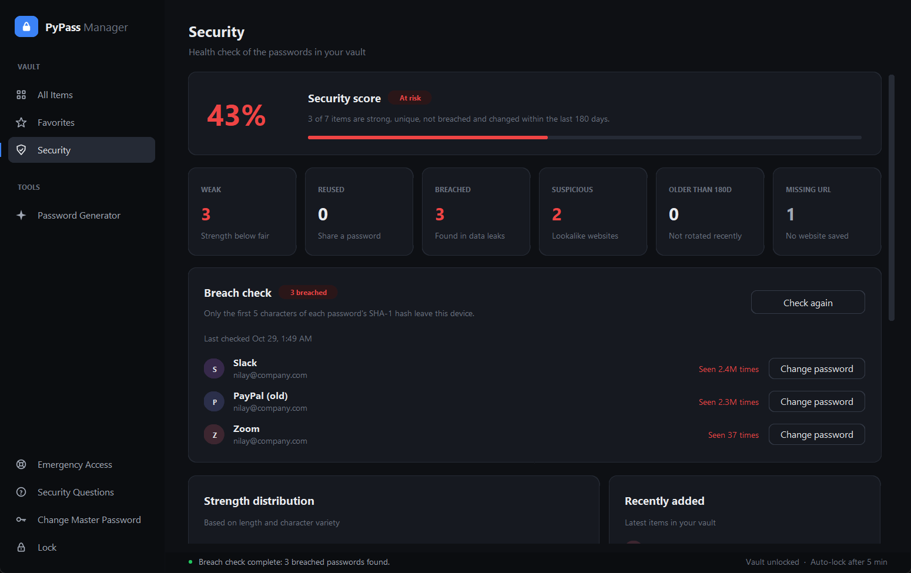
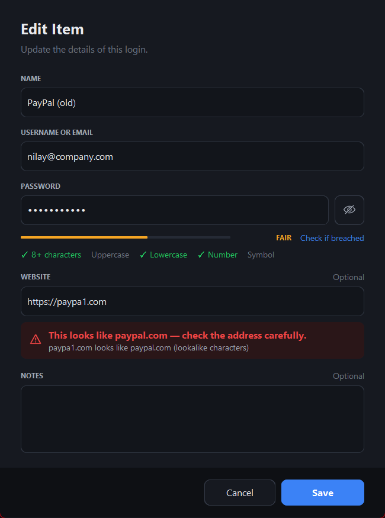
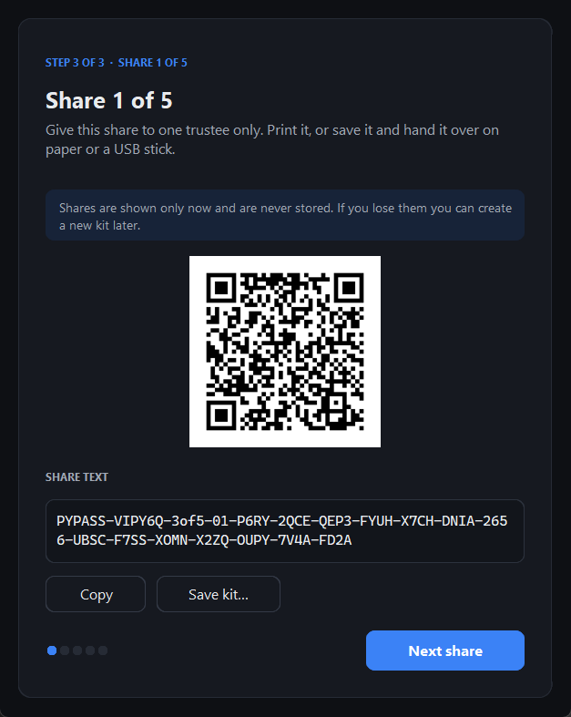
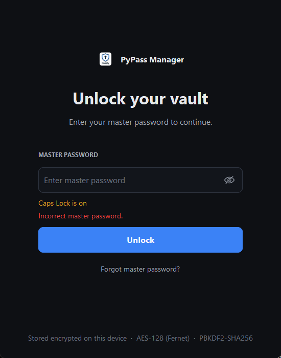
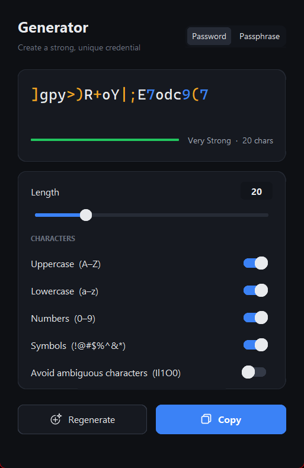
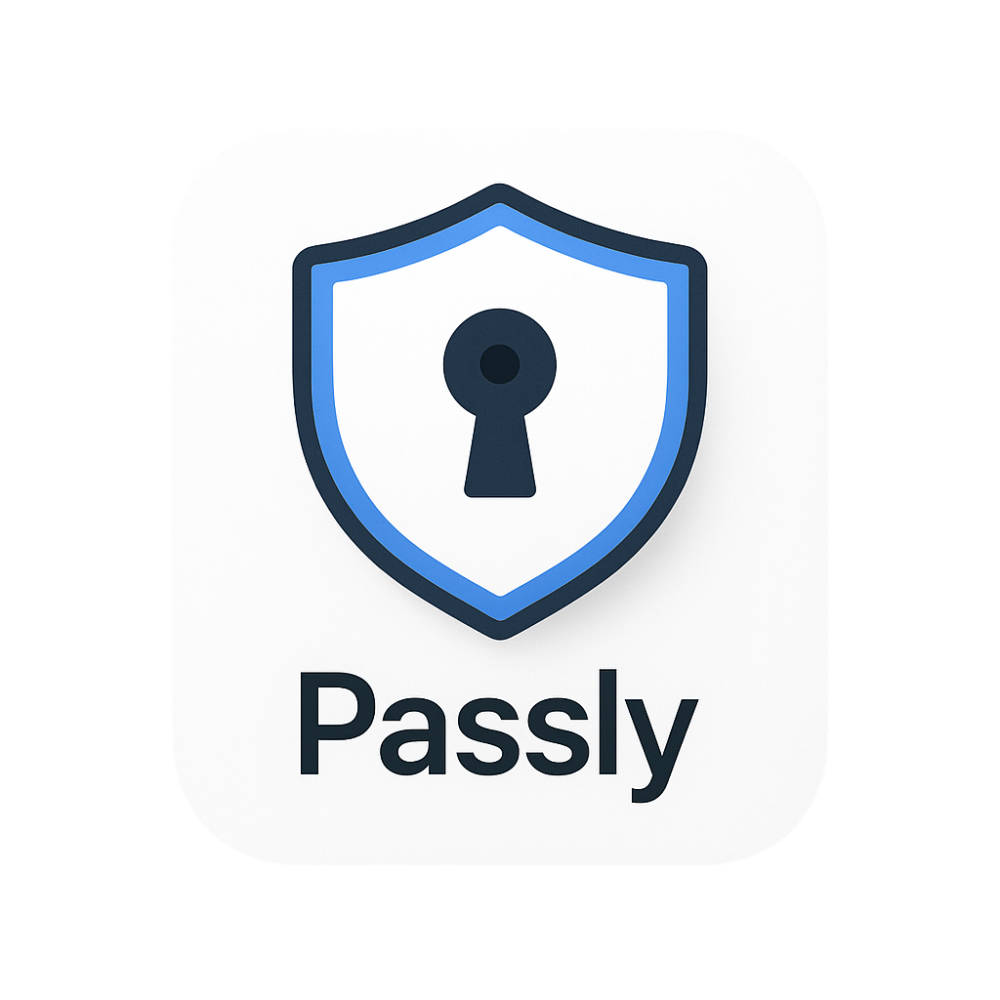

PyPass Manager is a free, offline password manager for Windows. It encrypts your vault on your own device, warns you about leaked passwords and fake websites, and lets people you trust help you recover access in an emergency.
Free & open source · No account · No cloud · Windows 10 & 11

On top of a solid encrypted vault, PyPass Manager actively protects you from the three ways people really lose accounts: leaks, phishing and lockouts.
Check your whole vault against more than 900 million passwords exposed in real data breaches, powered by Have I Been Pwned.

An offline lookalike-domain detector warns you the moment a saved address imitates a real site.
paypa1.com, rnicrosoft.compaypal.secure-login.com tricks
Split a recovery key between people you trust using Shamir's Secret Sharing. Choose, for example, any 3 of 5 trustees: together they can restore access, but fewer than 3 learn nothing at all.

One number for your vault's health, with weak, reused, old and breached items and one-click fixes.
8–64 characters or memorable passphrases, from a cryptographically secure random source.
Every login shows its site's logo, even without a URL. Logos are cached on your PC.
Locks after inactivity, hides the vault and wipes keys and decrypted data from memory.
Copied passwords are cleared after 15 seconds, but only if you haven't copied anything else since.
Search names, usernames, websites and encrypted notes. Sort and pin favorites.
Change or recover your master password at any time, without re-encrypting or losing data.
Repeated wrong guesses trigger a growing lockout that survives restarts.
A second recovery route that ignores capitals and extra spaces.
All passwords and notes are encrypted with a single random vault key. That key is stored three times, each copy locked by a different route. This is why you can change or recover your master password without losing anything.
The vault is a local file in your user profile. There's no server, account or sync service to breach.
Only two features go online: website logos (domain only) and the breach check (a 5-character hash prefix, on demand). Logos can be switched off.
Service names, usernames and URLs are stored unencrypted so they can be searched. Passwords and notes are always encrypted.



Free for Windows 10 and 11 (64-bit). Installs in seconds, no admin rights needed.
Yes. There's no subscription, no premium tier and no ads. It's an open-source project, and every feature on this page is included.
In an encrypted file in your Windows user profile (%USERPROFILE%\.pypass_manager). Nothing is uploaded anywhere. Uninstalling the app keeps your vault, so reinstalling or upgrading never loses data.
You have two recovery routes: your security questions, or Emergency Access, where any K of your N trustees combine their shares. Both let you set a new master password and keep all your saved passwords.
No. Only the first 5 characters of each password's SHA-1 hash are sent to Have I Been Pwned, which returns hundreds of matching hashes. The comparison happens on your computer, so neither the service nor anyone watching the network learns your password.
Yes. Everything works offline. The internet is only used for website logos and for the breach check when you click it, and logos can be turned off.
The installer is for Windows only. Because the app is written in Python, it can be run from source on other systems; see the instructions on GitHub.